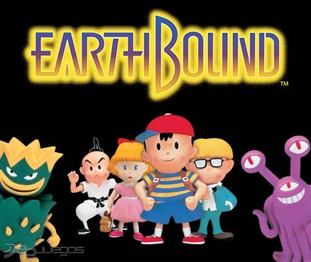
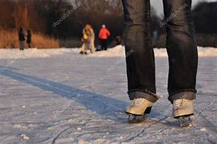

Mogyoródi Balázs
Célom, hogy sikeres programozó legyek. Emellett célom, hogy elég ismeretet szerezzek, hogy le érettségizzek emelt Informatikából.
Mit tanultam eddig?
- Nagyon jó ismeretem van a távoktatás (digitális oktatás), mükődéséről. Készítettem belőle egy 30 oldalas esszét.
- Sikeresen leérettségiztem.
- Magyar közép 5
- Angol közép 5
- Matek közép 4
- Történelem közép 4
- Informatika közép 4
Hobbijaim
Kedvenc szabad idős tevékenységem filmek és sorozatok nézése és véleményezése társasággal. Emellett számítógépes játékokkal szoktam még játszani. Sportolási tevékenységem közé a korcsolyázás tartozik.

